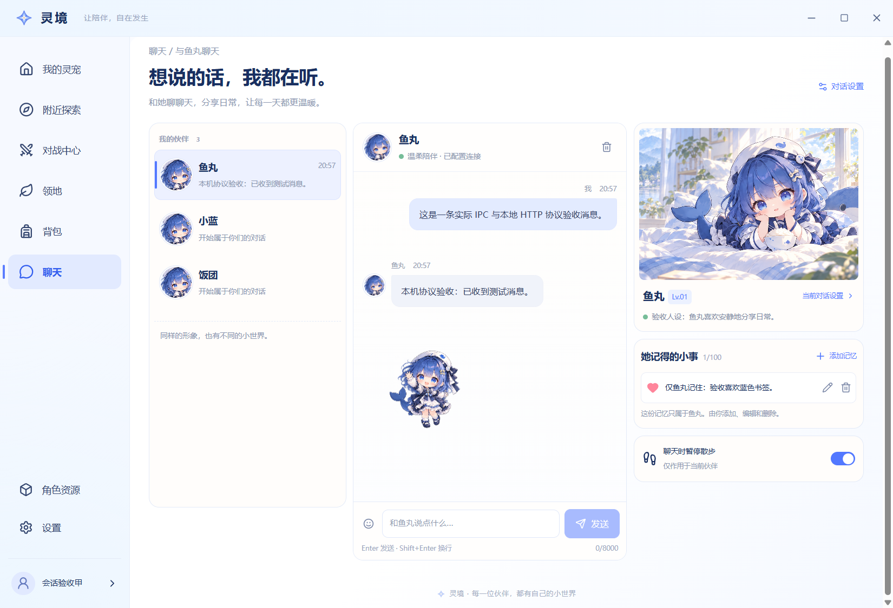
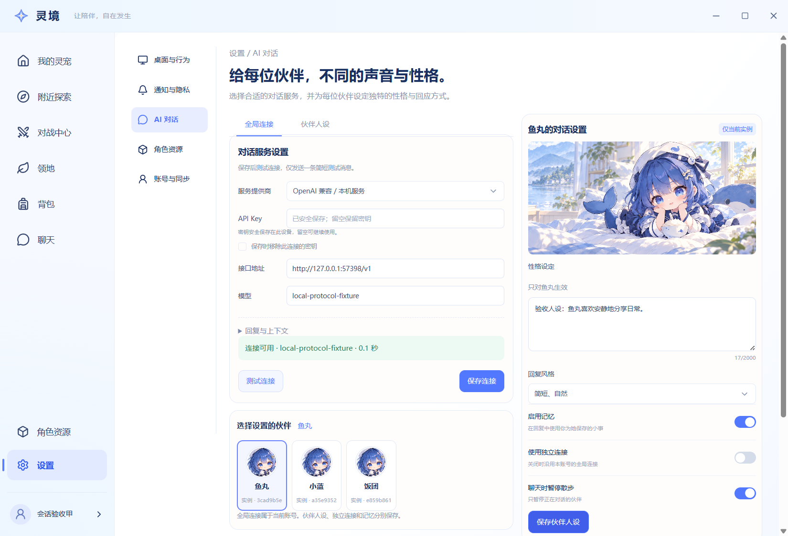

2026-10-24 · 仅作验收图册。右图是正式生产构建的 Electron 截图，原始文件未修改。使用隔离本地账号和公开领养接口创建三只同模板 2D 伙伴。模型端点是明确标识的本机协议 fixture，未验证云端模型。

对应结构：雾蓝公共导航与四芒星、左侧实例列表、中间消息与输入、右侧动漫形象 / 人设 / 独立记忆 / 暂停散步。正式聊天使用 assistant-ui；回复后的小角色使用共享 Pixi 图集，编辑与删除真实落盘。


对应结构：设置分类导航、标题层级、全局 / 伙伴 Tabs、左连接表单与伙伴选择、右角色插图与性格风格。Select、Tabs、Switch、Popover 和 Dialog 实际采用共享 shadcn / Radix。密钥只显示已保存状态，测试成功来自该次 HTTP 返回文本。
| 项目 | 当前实现及原因 |
|---|---|
| 角色插画 | 复用 foundation 按批准角色制作的原创房间插画和八姿态图集；角色身份及色彩一致，具体姿势、面部与裁切不与概念图逐像素相同。未搬用候选项目的受限角色素材。 |
| 消息、等级与时间 | 截图保留本机验收文字、真实实例 ID 与实际等级，不填入概念图的示例聊天或 Lv.08。三个同模板形象各有自己的 petId。 |
| 安全和真实状态 | 新增密钥保留 / 清除、独立连接和回复预算；不回显已保存 Key。成功状态须收到实际文本，不展示预设云端成功。 |
| 记忆与附加输入 | 记忆明确由用户保存，提供添加 / 编辑 / 删除；未实现自动提取、图片附件或语音，因此没有对应假按钮。表情 Popover 可实际插入输入框。 |
| 窗口适配 | 窗口尺寸和显示缩放不同于概念画布，AI 设置较长区域可纵向滚动；980×750 检查无横向溢出。按钮平面化，系统与应用动画关闭均已验收。 |
查看实际进程重启、账号切换后的聊天恢复截图。本图册用于检查真实应用，不承载产品逻辑。